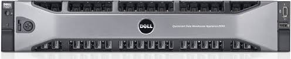
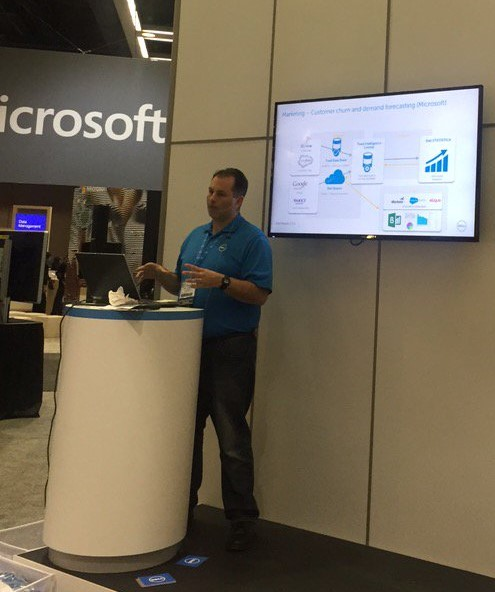

At the start of this role I initially worked on the Dell business intelligence products. I created a demo environment and series of demos to give the sales engineers a consistant base for showing off the products. I also created blog, video content as well attened tradeshow in order to promote awarness of Dell's business intelligence portfolio.
Later, I worked on a complete Dell Software solution which involved the creation of a demo and demo envirnment with the different products in information managemnet to show how each product contributed to an orginaizaiton. These were in vertical markets, such as healthcare and spanned data replication, data management, data integration, data validation and advanced analytics. I built a stand alone virtual machine for this project with data connectivity to ERP systems and relational databases. This allowed myself and others to demonstrate the entire end to end solution in presentations and trade show setting while still allowing sales and sales engineers to demonstrate their part of the business with the context of the much broadeer picture for a backdrop.
As a member to the Dell Quickstart Data Warehouse appliance team I was responsible for a number of tasks. I was a System Engineer, devloper, project manager, trainer among others.

First I was the systems engineer responsible for creating and implementing the scripts for loading and recovering the system configuration. This involved working within the Windows pre-environment (WinPE) and using batch scripting to setup the hard drives in the desired RAID configuration and also to implement a recovery system from an internal SD card.
I also developed and modified PowerShell and C# code in the applaince for a user interface witch allowed users of the appliance to quickly get started with installation and configuration. I created a code repository for the team by setting up a Microsoft Team Foundation Server and creating a project so that the all developers and system engineers were working from the same code base.
In addition I stepped up as acting project manager and represented the engineering team in program meetings, giving status, taking guidance and suggesting alternative plans. Furthermore, I was responsible for training and training materials delivered to Dell services, Dell sales and manufacturing, including step by step guides and troubleshooting methods.
Finally, I took initiative to actively promote our product to our company and customers and was selected to give a presentation at the Dell Enterprise forum on what the Dell Quickstart Data Warehouse appliance was and the benefits it brought to your organization.
